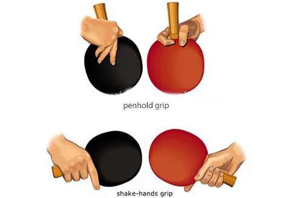

Table tennis originated in England during the late 1800s. It began as an after-dinner game played by upper-class Victorians who wanted an indoor version of lawn tennis during the cold winter months. Early players used everyday objects as equipment—books served as nets, champagne corks were used as balls, and cigar box lids acted as paddles.
The game became increasingly popular in the early 1900s. In 1901, English manufacturer J. Jaques & Son Ltd. trademarked the name "Ping-Pong," inspired by the sound the ball made when hitting the paddle and table. Today, "Ping-Pong" is often used informally, while table tennis is the official name of the sport. The sport grew internationally, leading to the formation of the International Table Tennis Federation (ITTF) in 1926, which established official rules and organized the first World Championships. Table tennis continued to expand worldwide and became an official Olympic sport at the 1988 Summer Olympics in Seoul. Today, table tennis is played by hundreds of millions of people worldwide, making it one of the most popular sports on Earth.
Spin is one of the most important parts of table tennis. Players use:
The best players don't just hit hard—they hit smart.
Many points are won because of a great serve.
The shakehand grip is the most common table tennis grip used around the world. Players hold the paddle similarly to how they would shake someone's hand, creating a balanced style of play that allows for strong forehand and backhand shots. Because of its versatility and ease of learning, it is often recommended for beginners and is popular among all-around players.
The penhold grip is held similarly to how you would hold a pen or pencil and is commonly used by many Asian players. This grip provides excellent wrist flexibility, allowing players to generate powerful spin and quick attacking shots close to the table. While it can create a very strong forehand game, it often requires more specialized techniques to develop an effective backhand.

Choosing a table tennis paddle is much more complicated than most people realize. While beginners may think all paddles are essentially the same, competitive players know that there are countless combinations of blades and rubbers that dramatically affect speed, spin, control, and overall playing style. A paddle that works well for an aggressive, offensive player may feel completely wrong for a defensive player. Factors such as blade material, rubber type, sponge thickness, handle shape, and overall paddle weight all influence how the paddle performs. Because of these many variables, finding the right paddle often involves experimenting with different setups to discover what best matches your skill level and style of play.
When choosing a table tennis paddle, consider the following factors:
The Olympics play a major role in the world of table tennis and represent one of the highest levels of competition in the sport. Since table tennis became an official Olympic event at the 1988 Summer Olympics in Seoul, South Korea, Olympic competition has showcased the incredible speed, athleticism, and strategy involved in the game to audiences around the world. For many players, winning an Olympic medal is the ultimate achievement of their careers and a source of immense national pride. The Olympics have also helped increase the global popularity of table tennis, inspiring new generations of players and demonstrating that the sport is much more than a casual basement game. Through unforgettable matches and extraordinary displays of skill, the Olympic Games continue to highlight the very best that table tennis has to offer.